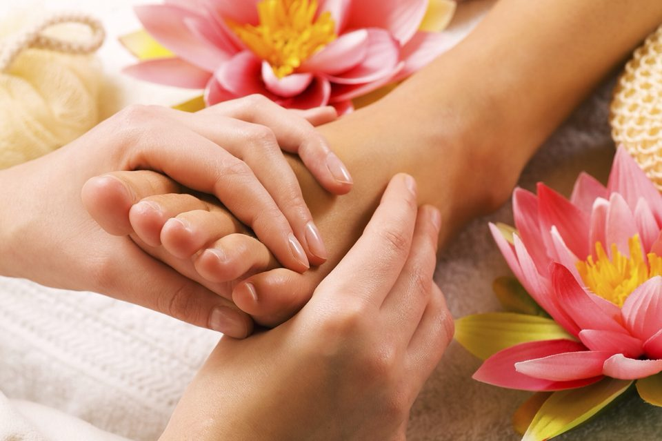

Uncover the Benefits of Foot Reflexology

Welcome to Reflex Divinee, where we delve into the world of foot reflexology and explore the myriad benefits it offers. Whether you’re a seasoned reflexology enthusiast or new to the practice, this blog will shed light on why this ancient therapy is worth your time and how it can enhance your overall well-being.
What is Foot Reflexology?
Foot reflexology is an alternative therapy that involves applying pressure to specific points on the feet, known as reflex points. By stimulating these reflex points, practitioners believe they can promote healing and balance throughout the entire body.
How Does Reflexology Work?
The theory behind reflexology is based on the concept of energy flow and zones. Our feet are thought to mirror our body’s internal organs and systems. When pressure is applied to specific areas on the feet, it is believed to stimulate energy flow and improve function in the corresponding body parts.
Top Benefits of Foot Reflexology
1.Stress Reduction and Relaxation
Benefits of foot reflexology is its ability to induce deep relaxation. The gentle yet firm pressure on the feet helps to release tension, reduce stress, and promote a sense of calm. This can be especially beneficial for those with high-stress lifestyles or those struggling with anxiety.
2.Improved Circulation
Foot reflexology encourages better blood flow throughout the body. The technique involves applying pressure to stimulate blood flow in the feet and lower legs, which can help improve overall circulation. This can be particularly useful for individuals who spend long hours sitting or have poor circulation.
3.Enhanced Energy Levels
Many people report feeling more energized after a reflexology session. By balancing the body’s energy and improving circulation, reflexology can help boost your overall vitality. It’s a great way to revitalize your body and mind, especially during periods of fatigue.
4.Pain Relief
Reflexology can be an effective method for alleviating various types of pain, including headaches, backaches, and foot pain. By targeting specific reflex points, practitioners can help relieve discomfort and promote healing. It’s a natural alternative to consider for pain management.
5.Improved Sleep Quality
Struggling with sleep issues? Reflexology may offer a solution. The relaxing effects of a reflexology session can help calm the mind and body, leading to improved sleep quality. Regular sessions may help you achieve a more restful and rejuvenating night’s sleep.
6.Boosted Immune System
Reflexology is believed to help strengthen the immune system by improving lymphatic drainage and enhancing the body’s natural defense mechanisms. A strong immune system is essential for preventing illnesses and maintaining good health.
7.Enhanced Mental Clarity
The relaxing and balancing effects of reflexology can extend to mental clarity and focus. By reducing stress and promoting relaxation, you may find that your mind is clearer and more alert after a session. This can improve concentration and cognitive function.
What to Expect During a Reflexology Session?
During a reflexology session, you’ll typically be seated comfortably with your feet exposed. The practitioner will use their fingers, thumbs, and sometimes specialized tools to apply pressure to various reflex points on your feet. The session usually lasts between 30 to 60 minutes, depending on your needs and preferences.
Finding a Qualified Reflexologist
To ensure you receive the best care, seek out a certified and experienced reflexologist. Look for practitioners with reputable training and positive reviews. It’s also a good idea to discuss any specific health concerns or conditions with your reflexologist before beginning treatment.
Incorporating Reflexology into Your Routine
For optimal benefits, consider incorporating reflexology into your wellness routine. Whether you choose to visit a professional or practice self-reflexology at home, regular sessions can contribute to your overall health and well-being.
Conclusion
Foot reflexology is more than just a relaxing treat for your feet—it’s a holistic therapy that offers a wide range of benefits for your body and mind. From reducing stress and improving circulation to boosting energy levels and enhancing mental clarity, reflexology has the potential to positively impact your life.
Give your feet the attention they deserve and experience the healing power of reflexology. Your body will thank you for it!